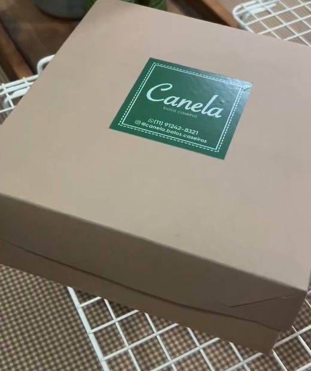
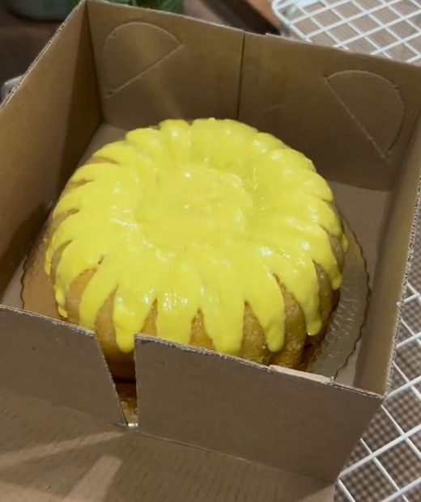
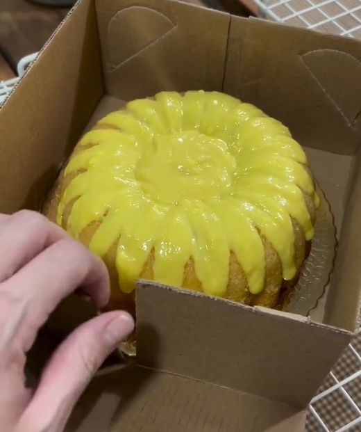
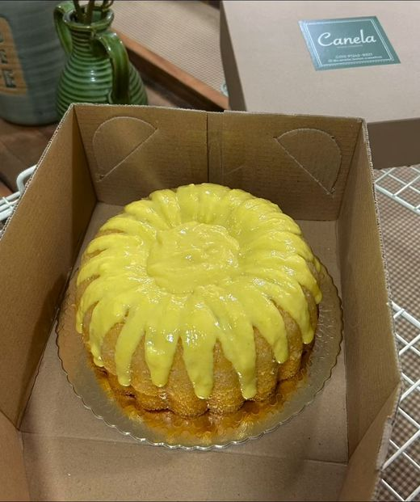

CARDÁPIO
Vamos comer um bolinho hoje?
Clique nos botões para ser direcionado e fazer seu pedido
O Canela bolos caseiros surgiu com o propósito de aquecer o coração das pessoas, fazendo-as lembrar da doçura da infância.
Os bolos representam o cuidado e o afeto de quem os prepara, são mais que uma receita, são memórias e sentimentos.
Receitas tradicionais preparadas sem grandes decorações, mas que resultam num sabor que conforta e transporta para o passado, dando a sensação de que estamos lá, tomando um café na casa da vó ou da mãe.
A sensação é de aconchego, não se explica com palavras.
Vamos comer um bolinho hoje?
Toque na foto para ver o bolo inteiro
Toque na foto para ver o pão inteiro
Do nosso forno até a sua mesa, cada pedido é embalado com o mesmo carinho de uma receita de família.
Veja no vídeo como cada bolo é acomodado e protegido antes de seguir até você.
Fazer meu pedido
1Cada pedido segue em caixa kraft com o selo Canela.

2O bolo é colocado com cuidado sobre uma base firme.

3As abas são ajustadas para o bolo viajar protegido.

4Seu bolo chega bonito, do jeito que saiu do forno.